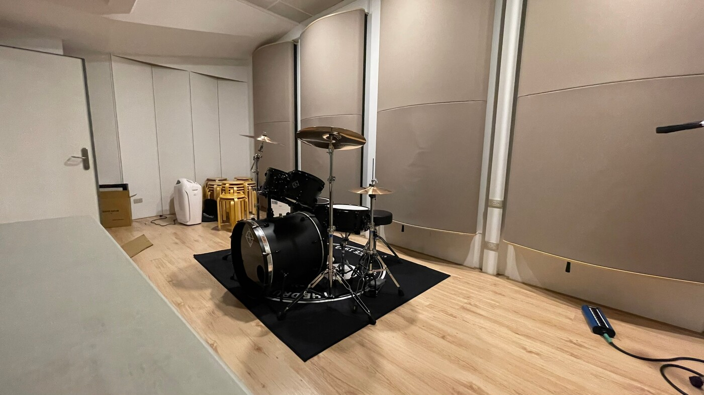
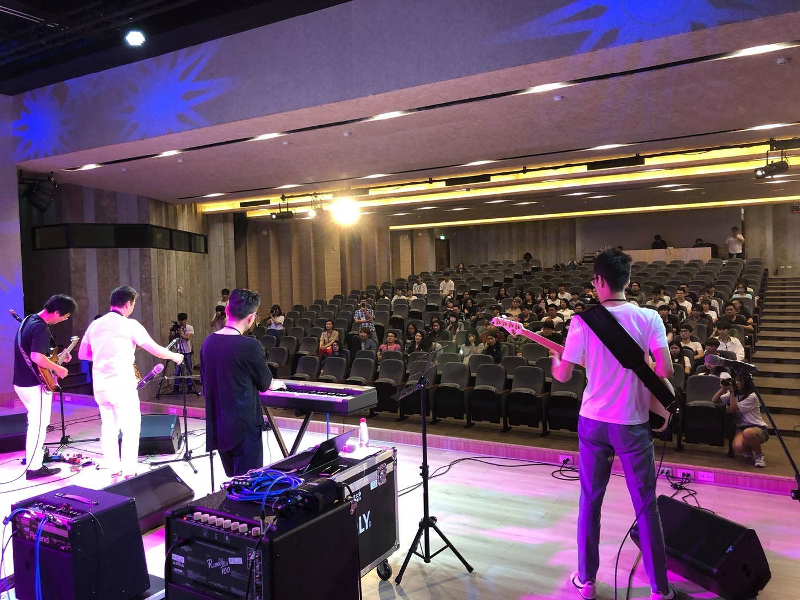
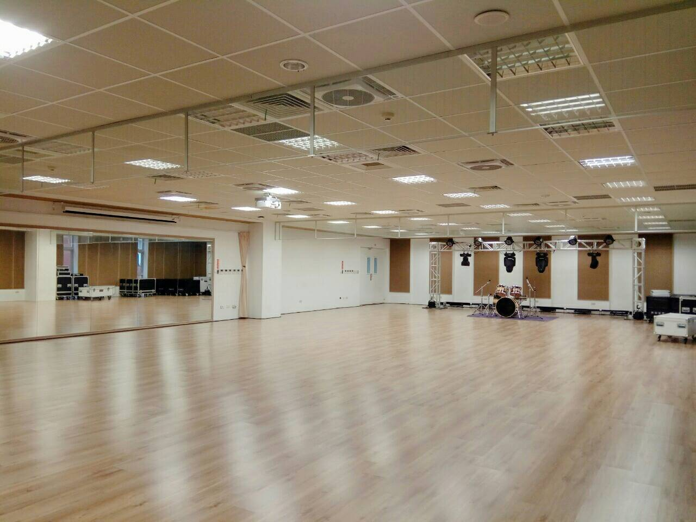
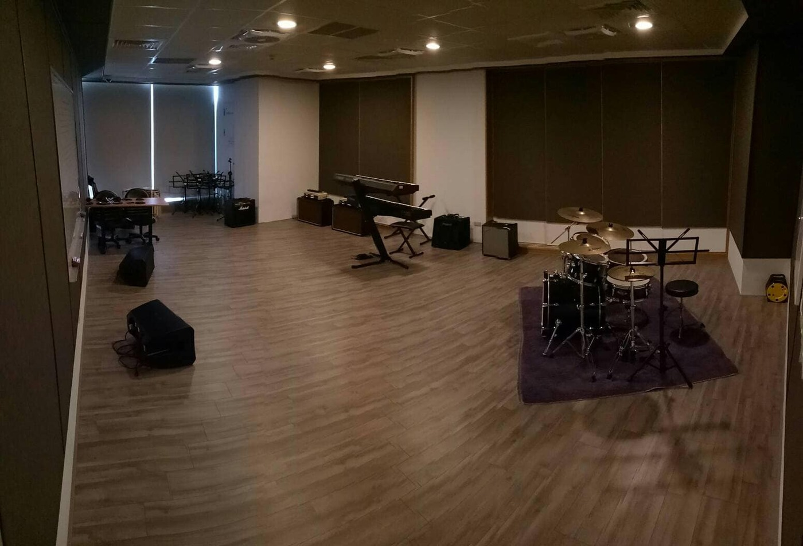
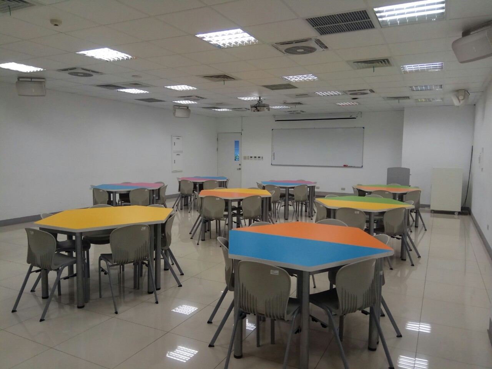
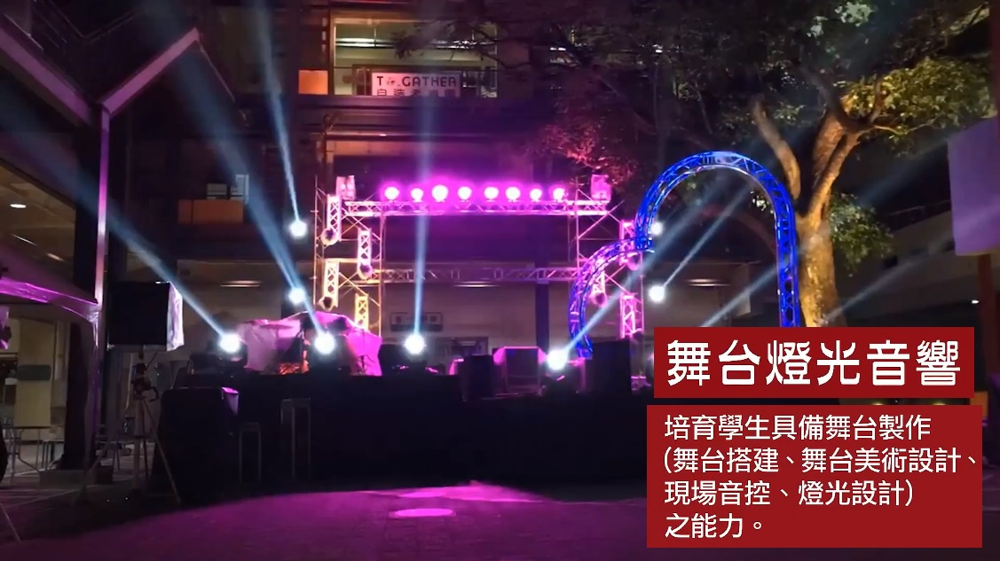

創作表演
從原創作品、演唱訓練到現場展演，讓學生把作品推進舞台。
這個 demo 將原網站的公開公告、系所入口與照片素材重新組織，讓首頁第一眼先看見流行音樂產業系的專業空間、演出能量與學生作品感。
News
Learning fields
從原創作品、演唱訓練到現場展演，讓學生把作品推進舞台。
學習錄音、混音、數位音樂與製作流程，建立作品完成度。
理解藝人經營、活動設計、宣傳溝通與產業專案執行。
從舞台技術到演唱會製作，建立現場工作與團隊協作能力。
Facilities

Recording studio
以錄音室、控制室與數位音樂教室作為作品製作核心，讓學生在接近業界流程的空間中學習。




Outcomes
把畢業成果做成巡迴演唱會，是首頁最該被看見的系所作品感。

舞台製作與現場執行Quick access